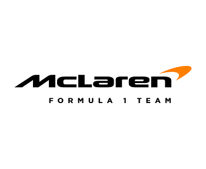
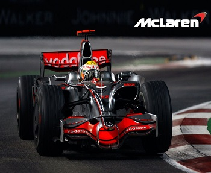
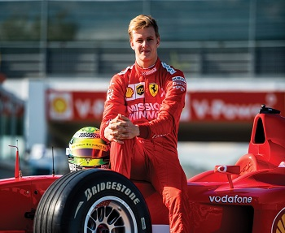
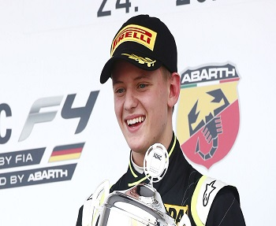
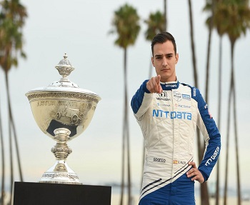
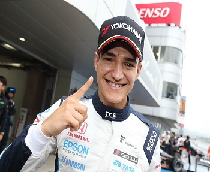

McLaren F1 Team — британская автогоночная команда, представляющая собой подразделение McLaren Technology Group[3]. В разное время команда участвовала и побеждала в различных автоспортивных соревнованиях, пять раз выигрывала соревнования CanAm, трижды выигрывала 500 миль Индианаполиса, по одному разу в гонках 24 часа Ле-Мана и 12 часов Себринга, в настоящее время команда сконцентрирована на участии в чемпионате мира Формулы-1, где 8 раз завоёвывала Кубок Конструкторов. С 2021 года выступает с двигателями Mercedes, после трёх последних сезонов с моторами Renault.
- руководство: Зак Браун, Андреа Стелла
- конструкторский штаб: Джеймс Ки, Мэтт Моррис, Питер Продромоу
- база: Уокинг, Великобритания
- лицензия: Великобритания
- машина: McLaren Mercedes MCL60
- тест-пилоты: Мик Шумахер, Алекс Палоу


Технические характеристики McLaren MCL60
1) Шасси: монокок из углеволокна, в который встроены органы управления и топливный бак
2) Структуры безопасности: Капсула безопасности, интегрированная с ударопрочной конструкцией и панелями, препятствующими сквозным повреждениям; передняя структура безопасности, предписанные регламентом противоударные узлы, поглощающие энергию при боковых столкновениях; встроенная задняя структура безопасности, передние и задние элементы, препятствующие повреждениям при опрокидывании машины; дополнительная защита в виде системы Halo и подголовника, а также сиденье, отвечающее стандартам безопасности.
3) Корпус: Кожух двигателя, боковые понтоны, днище, носовой обтекатель, переднее крыло и заднее крыло (с управляемой гонщиком системой DRS) из композитного углепластика.
4) Вес: Общий вес незаправленной машины с гонщиком – 798 кг.
5) Тормозная система: Шестипоршневые суппорты с передним и задним главными цилиндрами, электронная система управления тормозами brake-by-wire, вентилируемые диски и накладки из карбона.
6) Шины: Pirelli P Zero.
7) Колёсные диски: Производства компании BBS 18-дюймовые из магниевого сплава.
8) Системы охлаждения: радиаторы охлаждения воздуха системы турбонаддува, масляные радиаторы двигателя, системы гидравлики, радиаторы для охлаждающей жидкости и системы охлаждения ERS.
9) СИЛОВАЯ УСТАНОВКА
Двигатель: Mercedes-AMG M14 E Performance
Минимальный вес: 151 кг
Основные узлы силовой установки: двигатель внутреннего сгорания (ICE), кинетический мотор-генератор (MGU-K), тепловой мотор-генератор (MGU-H), накопитель энергии (ES), турбонагнетатель, управляющая электроника.
10) ДВИГАТЕЛЬ ВНУТРЕННЕГО СГОРАНИЯ
Рабочий объём: 1,6 литра.
Число цилиндров: 6.
Число клапанов: 24.
Угол развала цилиндров: 90 градусов при V-образной конфигурации.
Максимальная скорость вращения коленчатого вала: 15000 об/мин.
Максимальный массовый расход топлива: 100 кг/час на оборотах, превышающих 10500 об/мин.
Топливная система: непосредственный впрыск под максимальным давлением 500 bar, один инжектор на цилиндр.
Турбонагнетатель: одноступенчатый компрессор и турбина, работающая на выхлопных газах, с приводом от единого вала.
11) СИСТЕМА РЕКУПЕРАЦИИ ЭНЕРГИИ
ERS: Интегрированная с двигателем гибридная система рекуперации энергии на основе мотор-генераторов.
MGU-K: электрический мотор-генератор, соединённый с коленчатым валом, максимальная скорость – 50000 об/мин, максимальная мощность – 120 кВт, максимальная энергия рекуперации – 2 МДж на одном круге, максимальная отдача энергии – 4 МДж на одном круге.
MGU-H: электрический мотор-генератор, соединённый с турбиной, максимальная скорость – 125000 об/мин, максимальная мощность – не ограничена, максимальная энергия рекуперации – не ограничена, максимальная отдача энергии – не ограничена.
12)ТРАНСМИССИЯ
Коробка передач: продольное расположение, карбоновый корпус, восемь передних и одна задняя передача, электронно-гидравлическая система бесступенчатого переключения, планетарный дифференциал повышенного трения с многодисковым фрикционным пакетом.
Сцепление: карбоновое, многодисковое, с электронно-гидравлическим управлением.


Мик Шума́хер ( род. 22 марта 1999, Вюфлан-ле-Шато, Швейцария) — немецкий автогонщик, чемпион европейской «Формулы-3» в 2018 году и «Формулы-2» в 2020 году.
Шумахер начал свою гоночную карьеру в 2008 году. Чтобы не привлекать внимания прессы из-за фамилии Шумахер, Мик начал свою гоночную карьеру под псевдонимом «Мик Бетч», использовав девичью фамилию своей материСын семикратного чемпиона «Формулы-1» Михаэля Шумахера и его жены Коринны, племянник Ральфа Шумахера и Себастьяна Шталя, которые также занимались автогонками.
Активные годы
2021-2022
Статистика выступлений:
1)Участий в Гран-При - 44
2)Старты в Гран-При - 43
3)Лучшее место на старте - 6
4)Лучшее место в гонке - 6
5)Зачетные очки - 12
В ноябре 2016 года Шумахер впервые появился за рулём машины Формулы-3, приняв участие в MRF Challenge, чемпионате, проходящем в Индии. Он выступал в высшем классе «Формулы-2000» и закончил серию на 3-м месте, завоевав четыре победы, девять подиумов и две поул-позиции.
В апреле 2017 года Шумахер дебютировал в чемпионате Европы «Формулы-3» в команде Prema Powerteam. Он закончил сезон на 12-м месте, лучшим результатом было 3-е место в Монце. Шумахер был худшим из четырёх пилотов Prema, однако он занял третье место среди новичков чемпионата.
Шумахер продолжил выступать за Prema в чемпионате 2018 года. Он слабо начал сезон, одержав свою первую победу только на пятнадцатой гонке года в Спа-Франкоршам, почти в середине сезона. До этой гонки он занимал 10-е место в чемпионате, отставая от лидера чемпионата Дэна Тиктума на 67 очков. Однако Шумахер доминировал во второй половине сезона, одержав ещё семь побед, в том числе пять подряд. Победил в чемпионате, на 57 очков оторвавшись от Тиктума, занявшего 2-е место, одержав восемь побед, четырнадцать подиумов, семь поул-позиций и четыре быстрых круга.
Шумахер улучшил свою лучшую позицию в квалификации на Гран-при Канады, стартовав шестым. Он шел на седьмом месте, пока отказ двигателя не прервал его гонку. На следующей гонке, Гран-при Великобритании, он стартовал девятнадцатым и восстановился до восьмого места, набрав свои первые очки в Формуле-1. Неделю спустя на Гран-при Австрии Шумахер квалифицировался 7 и финишировал 6.
В феврале 2023 года было объявлено, что он будет запасным пилотом команды «Макларен» в сезоне 2023 года.


Алекс Палоу Монтальбо ( род. 1 апреля 1997 года в Сант-Антони-де-Виламажор) — испанский автогонщик, чемпион IndyCar Series в 2021 года.
Родился в Сант-Антони-де-Виламажор, начал заниматься картингом в возрасте пяти лет. В 2012 году выиграл чемпионский титул в WSK Euro Series.
Открытый чемпионат Евроформулы
Алекс дебютировал в формульных чемпионатах в 2014 году в Открытом чемпионате Евроформулы в составе команды Campos Racing. В своём дебютном сезоне одержал три победы, в том числе выиграл первую и последнюю гонки сезона, и занял третье место.
GP3 В 2015 году Алекс перешёл в GP3, где вновь выступал за команду Campos Racing. Одержал одну победу в последней гонке сезона на Яс Марина в Абу-Даби и по итогам сезона занял десятое место. в 2016 году Алекс продолжил выступление за Campos Racing в GP3, однако выступил хуже, набрал меньше очков (22 против 51) и занял лишь 15-е место.
Японская Формула-3
В 2017 году Алекс перешёл в Японскую Формулу-3, где выступал в составе команды Threebond with Drago Corse. За сезон одержал три победы и занял третье место.
Помимо выступлений в Японии в 2017 году, Алекс принял участие в трёх этапах Мировой серии Формулы V8 3.5 в составе команды Teo Martín Motorsports, где в дебютном этапе завоевал поул-позиции к двум гонкам, и во второй одержал победу. Также в 2017 году Алекс принял участие в Формуле-2 в заключительных двух этапах в составе команды Campos Racing.
Чемпионат Европы Формулы-1
В 2018 году Алекс выступал в Чемпионате Европы Формулы-3 в составе команды Hitech Bullfrog GP. За сезон семь раз поднялся на подиум, и занял седьмое место.
С 12 июля 2022 года Chip Ganassi Racing выпустила пресс-релиз о продлении контракта, в котором были опубликованы цитаты босса команды и гонщика. Однако спустя несколько часов Палоу в социальных сетях объявил, что этот пресс-релиз ошибочный.Спустя еще какое-то время команда McLaren выпустила пресс-релиз, в котором сообщила о контракте с Палоу,27 июля Chip Ganassi Racing подала гражданский иск против Палоу. 14 сентября Палоу сообщил, что останется в Chip Ganassi Racing в 2023 году. Команда сообщила, что соглашение с гонщком даёт ему возможность участвовать в тестах автомобилей других гоночных серий, если это не противоречит обязательствам в IndyCar Series. Следом McLaren объявила, что Палоу примет участие в тестах автомобиля Формулы-1 MCL35M.

